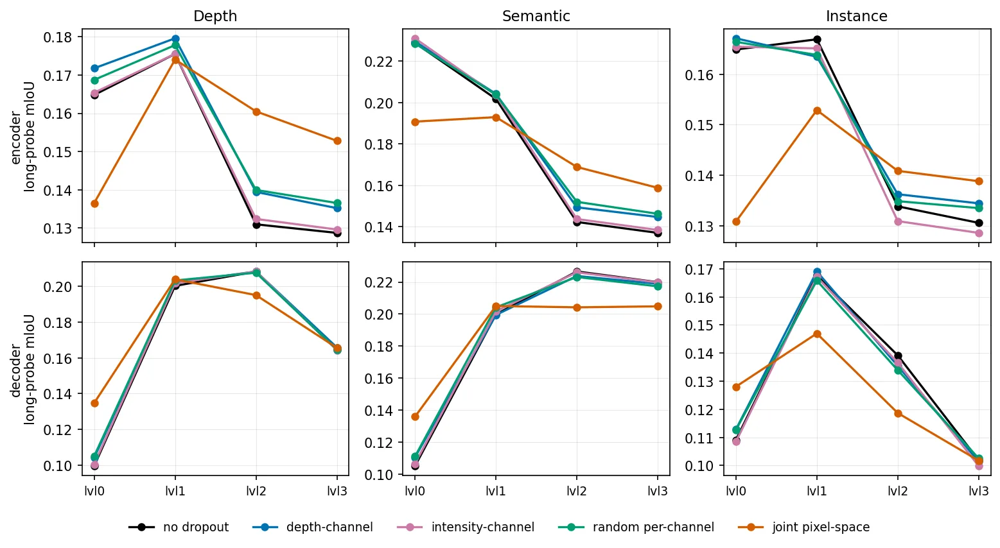
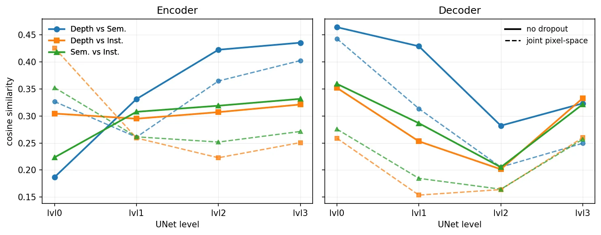
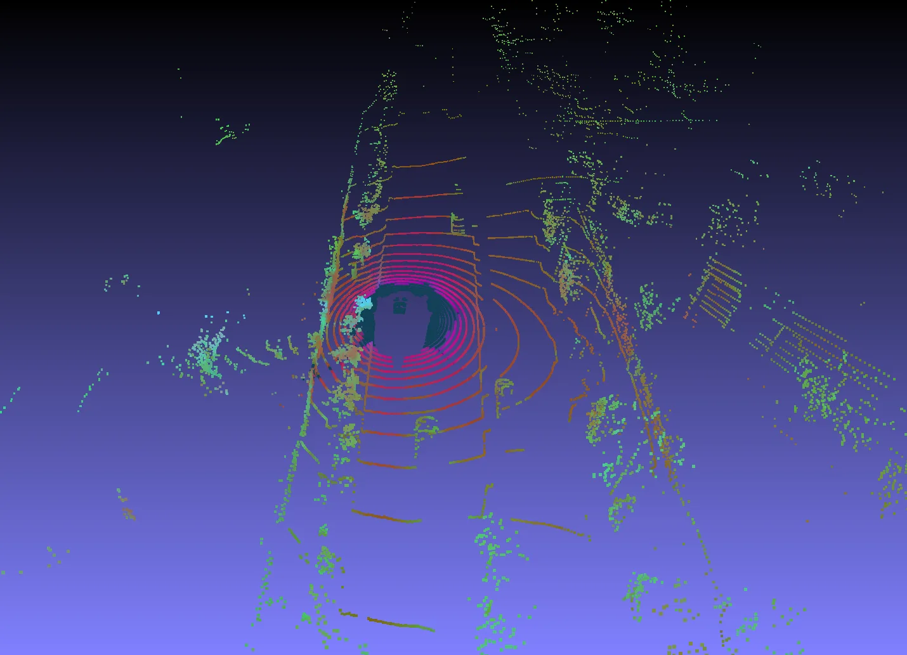
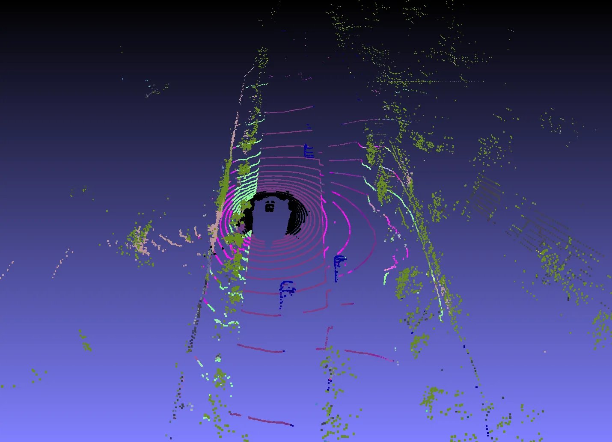
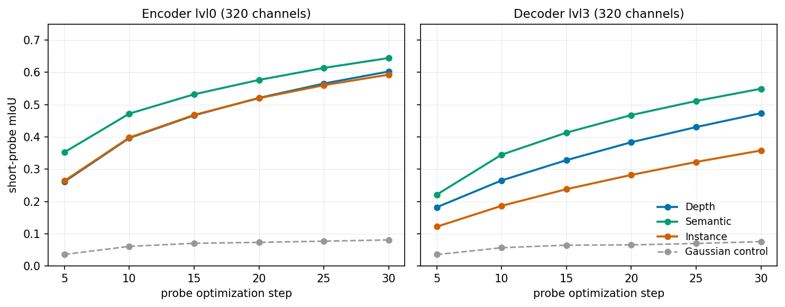

无坐标几何：作为 3D 特征桥梁的 LiDAR Diffusion
Geometry Without Coordinates: LiDAR Diffusion as a 3D Feature Bridge
这是从底层几何走向 3D 表征的基础性观察：LiDAR-conditioned diffusion 不只生成输出，也能把 2D 先验沉淀为不依赖原始坐标的点级特征。它尚未提供 SLAM 或状态估计后端，但可作为稀疏点云语义、深度和不确定性先验的候选表征。
mIoU
mIoU
mIoU
training
作者、单位与技术谱系 · Research context
作者与单位
研究脉络
- DINO / Depth Anything / Segment Anything方法上游关系：本文使用现成 2D foundation models 产生深度、语义和实例伪标签，将 2D 先验转到 LiDAR 条件扩散。[论文原文]
- Stable Diffusion 1.5 / diffusion features方法基座关系：模型继承 latent diffusion 与 U-Net 中间特征分析范式，再加入 LiDAR 投影条件和文本任务选择。[论文原文]
- LiDAR Diffusion 3D Feature Bridge本篇推进关系：以去 xyz 的点云 probe 和跨模态相似度，将扩散模型从输出生成器推进为可分析的 3D 表征桥梁。[arXiv 摘要页]
合作网络
- 作者共同署名Samed Doğan、Nico Leuze、Alfred Schöttl → Geometry Without Coordinates关系：共同署名[官方 arXiv HTML]
- Munich University of Applied SciencesMunich University of Applied Sciences → 三位论文作者关系：公开 affiliation[官方 arXiv HTML]
只记录公开署名与 affiliation，以及论文明确的技术依赖；未推断导师或师生关系。
方法本质拆解 · What actually changed
训练改变了什么？
模型在 nuScenes 上训练 50 epochs，三种 prompt 模态联合进入同一优化过程，使用 Stable Diffusion 1.5 的 latent diffusion 目标。论文没有把 probe 当成模型训练本身：probe 是后续单线性层评估，训练 30 或 60 steps 且不提供 xyz。
新增了什么约束？
LiDAR 投影、相机—LiDAR 外参/内参和文本 task prompt 将稀疏点云条件连接到 depth、semantic、instance 三种伪标签监督。研究性 probe 额外排除 x/y/z 输入，强制测试特征内容而不是投影几何捷径；joint pixel-space dropout 则作为条件鲁棒性消融。
推理时做了什么？
推理按文本 prompt 选择输出模态，并把图像平面输出和 U-Net 中间特征反投影到 LiDAR 点云。论文的后续 probe 是逐点线性分类，不包含 BA、滤波、回环或全局地图优化，因此它是表征桥梁而非完整状态估计系统。
方法本质是什么？
LiDAR 提供稀疏几何条件，2D foundation pseudo-labels 和 diffusion denoising 把语义/深度先验注入共享 U-Net；浅层保留可解码的单模态信息，中间层跨模态对齐，decoder 再按 prompt 专化。真正改变的是稀疏点云的特征可分性与多任务组织，而不是坐标系或估计器状态变量。
稀疏 LiDAR + 2D foundation 伪标签与文本 prompt，改变扩散 U-Net 的点级中间特征并反投影回点云，以形成不依赖 xyz 的多模态 3D 表征。

动机与问题Motivation
动机与问题
原生 3D foundation model 受限于多模态数据规模和标注稀缺，而 2D foundation models 已经积累了更丰富的几何、语义和边界先验。本文问的是：在不让 probe 借助投影坐标捷径的前提下，LiDAR 条件扩散模型是否能把这些先验转成可迁移的点级 3D 特征。
方法Method
方法总览
模型以 LiDAR 投影到相机平面的条件和文本 prompt 为输入，在 Stable Diffusion 1.5 的 latent diffusion 框架中联合训练深度、语义和实例三种任务。预测输出和中间 U-Net 特征再通过相机—LiDAR 外参、内参和深度反投影回点云；线性 probe 只看每个点的特征向量，不输入 x/y/z。
关键技术细节
伪标签由现成 2D foundation models 生成：深度、语义和实例任务分别转为点级监督，文本 prompt 选择输出模态；三类模态沿 modality axis 扩展后联合优化。作者比较 none、单通道 depth/intensity/random dropout 与 joint pixel-space dropout，并用跨模态 cosine similarity 分析 encoder 逐层对齐、decoder 重新专化的结构。

实验Experiments
实验设置
模型在 nuScenes 上训练 50 epochs，使用每样本 6 个 camera views、3 种 task modalities、8 张 NVIDIA A40，per-GPU batch size 为 4，论文报告 effective batch size 576；classifier-free guidance dropout 和 conditioning-projection dropout 均为 20%。长 probe 使用固定 validation chunk 累积特征并训练 60 steps，短 probe 在单个样本上训练 30 steps；指标包括去 xyz 的长 probe mIoU、跨模态 pairwise cosine similarity 以及 LiDAR 点上的 depth abs_rel、RMSE、δ1.25。
实验数字与比较
无 dropout 时，encoder/decoder 的最佳 semantic mIoU 分别为 0.229（encoder L0）和 0.227（decoder L2），而匹配维度的 Gaussian-noise Base 仅为 0.035/0.038；对应的 depth mIoU 为 0.176/0.208、instance mIoU 为 0.167/0.168。表 2 显示 encoder 的 Depth-vs-Semantic cosine similarity 从 L0 的 0.187 增至 L3 的 0.435，decoder 则从 L0 的 0.464 降至 L2 的 0.282；这支持‘中间共享、后期任务专化’的表示解释。
消融/失败边界
去掉或改变 conditioning dropout 时，depth-only、intensity-only、random per-channel 的最佳 probe 数值仍接近 none；joint pixel-space dropout 则把 encoder semantic mIoU 从 0.229（none）降到 0.193，并使 decoder semantic mIoU 从 0.227 降到 0.205，同时改变浅层对齐结构。输出质量表中，none 的 depth abs_rel/RMSE/δ1.25 为 0.160/7.11/0.781，joint pixel-space dropout 为 0.165/7.27/0.777；因此联合像素丢弃会损害当前任务质量，且结论依赖伪标签质量、投影配准和 nuScenes 分布。
局限与迁移Limitations & Transfer
局限与待核验
作者讨论的限制包括表示分析依赖线性 probe、不同层的通道维度不同，以及任务伪标签和 2D foundation model 的类别体系会影响可解码性；语义输出还限制在 Cityscapes label set。待核验项包括真实 3D ground truth 下的跨数据集泛化、点云稀疏化/遮挡/外参误差对表征的影响，以及这些特征是否能改善 SLAM 的回环、语义关联或状态协方差，而不只是提高离线 probe 分数。
与你研究路线的关系
可迁移模块是‘LiDAR 条件 + 多任务 prompt + 中间 U-Net feature → 点级几何/语义先验’，可接到对象关联、回环验证或状态估计中的语义残差；去 xyz probe 的设计也适合测量模型是否真正学到特征而非投影捷径。下一步应在同一 LiDAR 序列上注入外参扰动、稀疏化和动态遮挡，比较扩散特征、原始强度与坐标基线的校准误差、关联成功率、Hessian 可观测性和运行成本。
{kind=link}

{kind=link}

{kind=link}

{kind=link}
